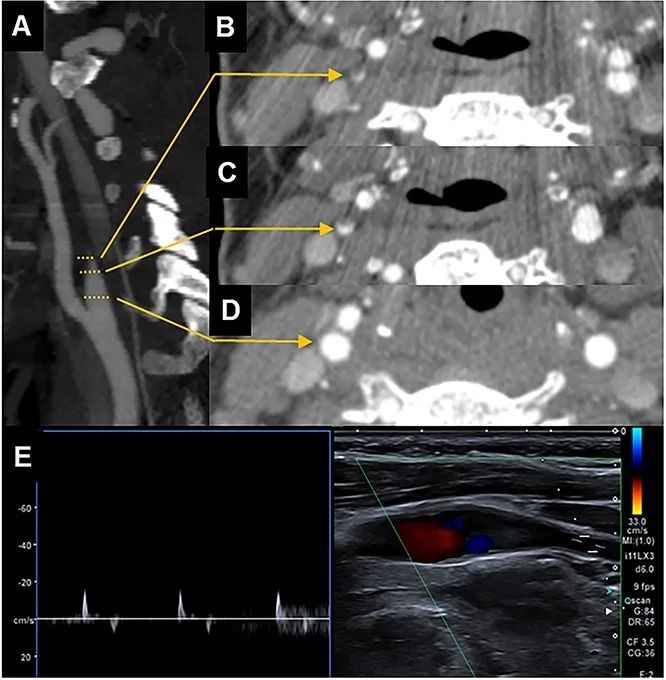
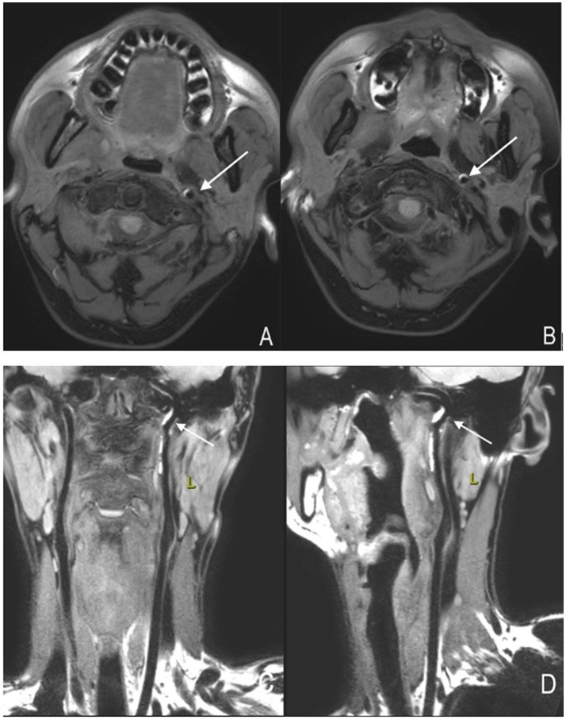
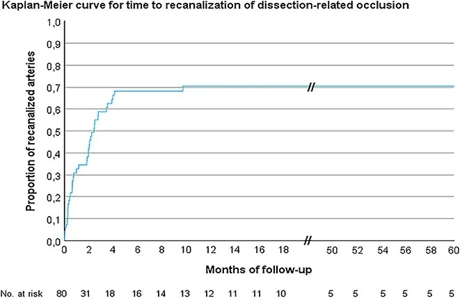
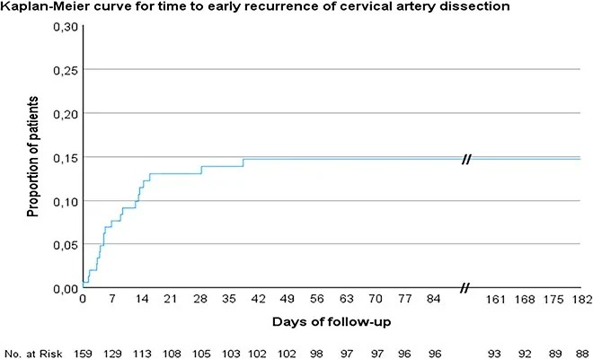

685 — Theo dõi dài hạn & ngừng thuốc sau bóc tách động mạch cổ ở trẻ: tái thông – hẹp tồn dư – tầm soát bệnh mô liên kết & tư vấn thể thao
Tags: pattern:boc-tach-mach pattern:hep-tac-mach pattern:gia-phinh-mach pattern:tai-thong-mach vung:mach-co-dau-co vung:nao-nhi protocol:CTA-co protocol:MRA-co protocol:MRI-thanh-mach incidentaloma:khong
Mức chắc chắn (certainty): tổng hợp y văn (literature synthesis) — ghép 1 phân tích gộp (29 nghiên cứu, 5.898 người), 1 đoàn hệ theo dõi siêu âm 10 năm (159 người, 191 động mạch), 1 tổng quan hình ảnh và 1 nghiên cứu gene 183 người. Cảnh báo mức chắc chắn: gần như TOÀN BỘ số liệu là người lớn (tuổi trung bình 42–45) — dữ liệu riêng cho trẻ gần như chỉ có ca lâm sàng; mọi ngưỡng dưới đây phải áp cho trẻ với mức dè dặt và ghi rõ là ngoại suy.
Điểm chốt của bài: bóc tách động mạch cổ là quá trình động, không phải chẩn đoán tĩnh. Trong vòng 6 tuần đầu, mạch thay đổi liên tục (tái thông, tiến triển tắc, tái bóc tách); hầu hết tái thông xong trong 4 tháng; và tái phát 4% (7% trong năm đầu, chỉ 2% kèm thiếu máu). Vì vậy ba quyết định lớn — (1) khi nào chụp lại, (2) khi nào ngừng kháng kết tập/chống đông, (3) ai cần tầm soát bệnh mô liên kết di truyền — phải dựa trên bằng chứng số và hình thái mạch đang tiến triển, không dựa trên một lần chụp lúc chẩn đoán.
1. Tổng quan bệnh học – cơ chế hình ảnh
1.1 Bóc tách "lành" như thế nào — vật lý của hồi phục
Bóc tách = máu vào thành mạch (do vỡ vasa vasorum tạo khối máu tụ trong thành (intramural hematoma) hoặc rách nội mạc tạo vạt nội mạc/vòi giả). Quá trình hồi phục gồm 3 cơ chế song song, mỗi cơ chế có dấu hiệu hình ảnh riêng:
- Tái hấp thu khối máu tụ trong thành → mạch nở lại. Trên MRI thành mạch độ phân giải cao (HR-vessel wall), máu tụ có tín hiệu cao hình lưỡi liềm trên T1 ở pha cấp/bán cấp; khi hồi phục, tín hiệu này mất dần và chuyển thành tổ chức xơ — nhiều tác giả xem đặc điểm tín hiệu T1 theo thời gian là dấu ấn tiên lượng lành trong 3 tháng (Li T et al., Front Neurol 2025, PMC12282257).
- Tái thông lòng mạch (recanalization) khi huyết khối trong lòng tan và dòng chảy tái lập. Trong đoàn hệ 159 người theo dõi siêu âm duplex, tái thông 40/80 động mạch bị tắc (70,4% tích lũy); tiến triển từ hẹp sang tắc 9/109 (10,0%); mọi thay đổi trừ 1 ca đều xảy ra trong 4 tháng (Eur Stroke J 2026, PMC13636090).
- Tổ chức hóa xơ (fibrosis) → hẹp tồn dư vĩnh viễn dù lòng mạch đã "lành". Thời gian tái thông hoàn toàn/ gần hoàn toàn trung bình ~4,7 tháng; pha cấp được định nghĩa là ≤ 14 ngày, giai đoạn nguy cơ TIA/đột quỵ tái phát cao nhất (PMC12282257).
Vì sao trẻ khác người lớn: ở trẻ, bóc tách thường gặp trong hai bối cảnh — (a) chấn thương kín (BCVI), thường ở động mạch cảnh trong đoạn nền sọ/cổ cao, và (b) tự phát liên quan loạn sản cơ xơ (fibromuscular dysplasia — FMD), bệnh mô liên kết, hoặc thao tác vùng cổ (đã có ca 20 tháng tuổi bóc tách động mạch đốt sống V4 sau nắn chỉnh cổ bằng tay — Arnold JC et al., Childs Nerv Syst 2026, PMC13038740). Ở trẻ, mạch nhỏ hơn, thành mạch mềm hơn, và không có xơ vữa — nên bất kỳ "hẹp/huyết khối" nào trên hình ảnh sau này đều không được quy cho xơ vữa.
1.2 Vì sao phải theo dõi theo lịch, không chụp một lần
- Mạch đổi nhanh trong 6 tuần đầu: trong 159 người, 62 thay đổi mạch hoặc tổn thương mới ở 50 người (31,4%), trong đó 42/62 xảy ra trong 6 tuần đầu; tái bóc tách trong 6 tuần gặp ở 20/159 (14,7%) (PMC13636090).
- Tái phát muộn vẫn có: 7/159 người (13,7% trong nhóm theo dõi dài) tái bóc tách từ 2 đến 7 năm → không được "kết thúc theo dõi" sau 6 tháng nếu còn triệu chứng hoặc còn bệnh mô liên kết.
- Tái phát kèm thiếu máu thì thấp: phân tích gộp 29 nghiên cứu/5.898 người cho tái bóc tách 4% (KTC 95% 3–7%), 2% trong 1 tháng đầu, 7% trong năm đầu, và chỉ 2% (1–3%) kèm biến cố thiếu máu (Lounsbury E et al., 2024, PMC10964388). Con số này là nền tảng để tư vấn thể thao — nhưng tác giả ghi rõ không có hướng dẫn dựa trên bằng chứng cho việc trở lại vận động.
1.3 Ngừng thuốc — bằng chứng định lượng
- Thời gian kháng huyết khối thường dùng: 3–6 tháng; nếu chọn chống đông, chuyển sang kháng kết tập tiểu cầu trong vòng 180 ngày là hợp lý (PMC12282257).
- Ngừng sau 6 tháng KHÔNG làm tăng nguy cơ thiếu máu não trong theo dõi (theo Pezzini và cộng sự, dẫn trong PMC12282257); dùng kháng kết tập kéo dài > 6 tháng KHÔNG cải thiện tái thông (theo Wadhwa và cộng sự, cùng nguồn) → kéo dài thuốc vô hạn không có lợi ích chứng minh, chỉ tăng nguy cơ chảy máu.
- Quan trọng cho trẻ: các thử nghiệm lớn (CADISS, TREAT-CAD, CATIS) chỉ tuyển người lớn; xu hướng thực hành hiện nay ưu tiên kháng kết tập tiểu cầu hơn chống đông ở bóc tách cổ, và ở trẻ chấn thương (BCVI) nhiều trung tâm chuyển sang kháng kết tập tiểu cầu trước khi ra viện (Murillo A et al., J Clin Med 2026, PMC13257469).
1.4 Ai cần tầm soát bệnh mô liên kết di truyền — đừng xét nghiệm tất cả
Nghiên cứu NGS trên 183 người bóc tách cổ tự phát không chọn lọc: chỉ 1,1% mang biến thể gây bệnh (COL3A1, ABCC6) và 16,4% có biến thể VUS; phân tích gộp 14 nghiên cứu/330 người cho tỉ lệ mang biến thể gây bệnh 0,4% ở nhóm không chọn lọc so với 23,4% ở nhóm có tiền sử gia đình bóc tách → kết luận: KHÔNG xét nghiệm gene thường quy cho mọi ca, chỉ làm khi xác suất trước xét nghiệm cao (Corradi L et al., Neurol Sci 2026, PMC13538227).
Cờ đỏ gợi ý bệnh mô liên kết (định hướng, không phải tiêu chuẩn): bóc tách nhiều mạch/hai bên, tái phát, tiền sử gia đình bóc tách/phình mạch/đột quỵ trẻ, dáng Marfan (vóc cao, sải tay > chiều cao, ngón dài, vòm miệng cao), sa van hai lá, phình/giãn gốc động mạch chủ, da mỏng – dễ bầm – sẹo teo (vEDS), khớp tăng động (điểm Beighton cao), vết rách gân/tràn khí màng phổi tự phát. Ca bóc tách đốt sống là biểu hiện đầu tiên của Marfan chưa chẩn đoán đã được báo cáo (PMC13397990); vEDS (COL3A1) biểu hiện bằng phình cảnh + phình nhiều tạng (PMC13499471).
2. Mẫu hình + chẩn đoán phân biệt theo hình thái (Gamut)
Mẫu hình cần phân loại: trên phim chụp lại sau 3–6 tháng, mạch không trở về bình thường. Gamut theo hình thái:
- Hẹp tồn dư có/không vạt nội mạc (residual stenosis / intimal flap): lành bằng xơ hóa → hẹp mềm, đều, không có vôi hóa; nếu còn vạt nội mạc di động thì chưa lành hoàn toàn.
- Giả phình (pseudoaneurysm): túi lồi ra khỏi lòng mạch, thường ở đoạn cảnh trong cổ cao (C1–C3) sau chấn thương; nguy cơ thuyên tắc xa và có thể lớn dần; là tổn thương tồn tại được nhiều tháng–năm.
- Tắc mạch không tái thông (persistent occlusion): tiên lượng tái thông thấp hơn nếu huyết khối ngược dòng lan xa; có thể tái thông muộn tới 2 năm (PMC12282257).
- Huyết khối trong lòng mới: cần phân biệt huyết khối cấp (tăng đậm độ trên CT, giảm tín hiệu TOF) với vạt nội mạc.
- Loạn sản cơ xơ (FMD): "chuỗi hạt" ở đoạn giữa động mạch cảnh trong/đốt sống, thường hai bên, gặp nhiều ở nữ; FMD vừa là nguyên nhân vừa là bẫy khi đọc phim sau bóc tách.
- Co mạch/RCVS, viêm mạch, co thắt do ống thông: hẹp đối xứng, nhiều đoạn, thay đổi giữa hai lần chụp, không có máu tụ trong thành → hồi phục.
- Bẫy kỹ thuật: MRA TOF làm hẹp giả ở đoạn mạch đổi hướng/giảm dòng; CTA vôi hóa giả; siêu âm phụ thuộc người làm; artifact chuyển động.
3. Bảng so sánh phân biệt (ma trận đối chiếu)
| Thực thể (entity) | Hình ảnh điển hình trên phim theo dõi | Chốt vào (rule-in) | Chốt loại (rule-out) | Gợi ý xác nhận |
|---|---|---|---|---|
| Hẹp tồn dư đã lành | Hẹp mềm, bờ đều, không vôi hóa, không máu tụ trong thành trên HR-MRI, dòng chảy ổn định qua nhiều lần chụp | Hẹp đứng yên 3–6 tháng + HR-MRI không còn tín hiệu máu tụ T1 | Hẹp tiến triển giữa hai lần chụp → chưa lành/tái bóc tách | HR-MRI thành mạch + siêu âm duplex; so sánh chính xác cùng mặt cắt |
| Giả phình sau bóc tách | Túi lồi lệch tâm, cổ rộng/hẹp, giữ nguyên hình qua các thì, thường ở cảnh trong cổ cao | Túi lồi + dòng xoáy chậm trong túi | Lồi mất đi khi chụp lại → không phải giả phình thật | CTA (tốt nhất), MRA; đo đường kính mỗi lần để phát hiện lớn dần |
| Tắc không tái thông | Không thấy dòng chảy; mô mạch teo nhỏ; tuần hoàn bàng hệ qua đa giác Willis | Không dòng chảy ≥ 6 tháng + mạch teo | Có dòng chảy yếu, tái thông muộn tới 2 năm | CTA/MRA + DSA khi cân nhắc can thiệp; bài 248 |
| FMD (loạn sản cơ xơ) | "Chuỗi hạt" đoạn giữa mạch, hai bên, có thể kèm phình trong sọ | Nhiều chỗ hẹp–giãn xen kẽ đối xứng + hai bên | Hẹp đơn độc, một bên, không thay đổi hình thái → nghĩ di chứng bóc tách | CTA/MRA toàn bộ động mạch cổ–thận (FMD thường đa vị trí) |
| Tái bóc tách | Tổn thương MỚI ở đoạn khác/đối bên hoặc tiến triển hẹp → tắc | Máu tụ trong thành MỚI trên HR-MRI + thay đổi so với phim trước | Hình thái y hệt phim cũ nhiều lần → không phải mới | HR-MRI T1 fat-sat; so sánh cạnh nhau mọi lần chụp |
| Co mạch/RCVS – viêm mạch | Hẹp nhiều đoạn, đối xứng, lan tỏa, thay đổi giữa hai lần chụp cách vài tuần | Hẹp hồi phục trong vài tuần–3 tháng, không máu tụ trong thành | Có máu tụ trong thành/giả phình → thực thể mạch, không phải co mạch | MRA/CTA lặp sau 4–8 tuần; bài 219/676 |
| Bẫy kỹ thuật (TOF/artifact) | Hẹp chỉ thấy trên MRA TOF, không thấy trên CTA/DSA/siêu âm | Hẹp biến mất khi đổi modality | Hẹp xác nhận trên ≥ 2 modality → tổn thương thật | CTA hoặc DSA xác nhận; không tăng thuốc vì một phim TOF |

CTA tái tạo đứng dọc (A) + các mặt cắt ngang (B–D) của động mạch cảnh trong đoạn ngoài sọ bị bóc tách gây tắc, kèm siêu âm duplex (E) — mạch teo nhỏ, không thấy dòng chảy, đây là hình thái nền để so sánh ở mọi lần chụp lại. Nguồn: Eur Stroke J 2026 (PMC13636090), Fig. 1, CC BY 4.0.
HR-MRI thành mạch động mạch cảnh trái: khối máu tụ trong thành hình lưỡi liềm tín hiệu cao (mũi tên) làm hẹp lòng mạch, thấy rõ trên mặt cắt ngang (A, B) và tái tạo đứng dọc (C, D). Đây là dấu hiệu theo dõi được theo thời gian: tín hiệu T1 mất dần khi máu tụ tổ chức hóa → gợi ý lành. Nguồn: Li T et al., Front Neurol 2025 (PMC12282257), Fig. 3, CC BY 4.0.4. Protocol chụp + hệ phân độ/điểm chuẩn hóa
4.1 Lịch chụp lại (tổng hợp từ thực hành đã công bố)
| Thời điểm | Modality | Mục đích |
|---|---|---|
| Cấp (0–24 giờ) | CTA cổ–não (hoặc MRA nếu trẻ ổn định, ưu tiên không xạ) | Chẩn đoán, phân độ Denver/Biffl I–V, tìm tổn thương đối bên |
| 1–2 tuần sau ra viện | CTA (phổ biến nhất trong thực hành nhi) hoặc MRA + siêu âm duplex | Phát hiện tiến triển tắc, giả phình sớm, tái bóc tách (42/62 thay đổi xảy ra trong 6 tuần đầu) |
| 3 tháng | CTA/MRA + HR-MRI thành mạch | Đánh giá tái thông và máu tụ trong thành; mốc để cân nhắc ngừng thuốc |
| 6 tháng | CTA/MRA | Quyết định ngừng kháng huyết khối (ngừng sau 6 tháng không tăng thiếu máu não — Pezzini); ghi đường kính giả phình |
| 12 tháng, rồi khi có triệu chứng | MRA (không xạ) hoặc siêu âm | Tái phát muộn (7/159 ca tái bóc tách 2–7 năm); theo dõi giả phình lớn dần |
- Nguyên tắc ALARA cho trẻ: ưu tiên MRA/siêu âm ở các lần theo dõi; CTA khi cần độ phân giải cao cho giả phình/đo đường kính hoặc khi MRA không kết luận.
- HR-MRI thành mạch (T1 fat-sat + T2) là modality tốt nhất để phân biệt máu tụ trong thành với mảng xơ vữa (không gặp ở trẻ) và để theo dõi lành bệnh theo tín hiệu.
- DSA chỉ khi: cân nhắc can thiệp (stent/coil), nghi tổn thương tầng (tandem), hoặc CTA/MRA không kết luận.
4.2 Ngưỡng quyết định (flowchart)
flowchart TD
A["Trẻ đã được chẩn đoán bóc tách động mạch cổ"] --> B["Chụp lại 1 đến 2 tuần sau ra viện: CTA hoặc MRA"]
B --> C{"Mạch tiến triển thế nào so với phim đầu?"}
C -->|"Tái thông hoặc hẹp giảm"| D["Duy trì kháng kết tập; chụp lại ở 3 tháng"]
C -->|"Hẹp tiến triển thành tắc"| E["Đánh giá bàng hệ và nguy cơ thiếu máu; hội chẩn can thiệp"]
C -->|"Giả phình mới hoặc lớn dần"| F["Đo đường kính; cân nhắc stent hoặc theo dõi sát mỗi 3 tháng"]
C -->|"Tái bóc tách ở đoạn khác hoặc đối bên"| G["Tìm cờ đỏ bệnh mô liên kết; xét chuyển chống đông hoặc kéo dài kháng kết tập"]
D --> H{"Đến mốc 3 đến 6 tháng"}
H -->|"Lòng mạch ổn định, không triệu chứng"| I["Cân nhắc NGỪNG kháng huyết khối sau 3 đến 6 tháng; hẹn chụp 12 tháng"]
H -->|"Còn huyết khối trong lòng, giả phình lớn hoặc tái phát"| J["Tiếp tục thuốc; chụp lại 6 tháng; tầm soát FMD và bệnh mô liên kết"]
I --> K["Tư vấn thể thao: tránh nắn cổ và môn va chạm mạnh; quay lại dần theo triệu chứng"]
J --> K
4.3 Tầm soát bệnh mô liên kết & tư vấn thể thao
- Xét nghiệm gene panel (COL3A1, FBN1, TGFBR1/2, SMAD3, COL5A1...): chỉ định có chọn lọc — 1,1% biến thể gây bệnh ở nhóm không chọn lọc so với 23,4% khi có tiền sử gia đình (PMC13538227). Cờ đỏ: bóc tách nhiều mạch/hai bên/tái phát, gia đình, dáng Marfan, da mỏng dễ bầm, khớp tăng động, phình gốc động mạch chủ.
- Trước khi gửi gene: khám hội chứng Marfan (tiêu chuẩn Ghent), siêu âm tim + đo gốc động mạch chủ (Z-score theo tuổi/giới), điểm Beighton, khám da, hỏi tiền sử tràn khí màng phổi tự phát/rách gân; khám toàn bộ hệ mạch (cảnh–đốt sống–thận–vành) để tìm FMD.
- Thể thao: không có hướng dẫn dựa trên bằng chứng (chính tác giả phân tích gộp ghi rõ) — nhưng nền tảng số để tư vấn là: tái phát 4% chung, 7% năm đầu, chỉ 2% kèm thiếu máu. Thực hành hợp lý: tránh nắn chỉnh cổ, môn va chạm/giật cổ (vật, judo, bóng bầu dục, đấu vật) và tư thế ưỡn cổ kéo dài; khuyến khích vận động aerobic không va chạm; tránh nâng tạ nặng/Valsalva mạnh nếu có phình tồn dư hoặc bệnh mô liên kết.
5. Biến thể bình thường và cạm bẫy
- Cạm bẫy 1 — "hẹp giả" trên MRA TOF. Ở đoạn mạch đổi hướng (cảnh trong đoạn nền sọ) hoặc khi dòng chảy chậm, TOF làm hẹp giả hoặc mất tín hiệu giả tắc. Luôn xác nhận bằng CTA/siêu âm/DSA trước khi leo thang điều trị — đây là bẫy dẫn tới kéo dài thuốc hoặc can thiệp vô ích.
- Cạm bẫy 2 — "tái thông = đã khỏi". Tái thông không đồng nghĩa hết nguy cơ: giả phình có thể tồn tại và lớn dần, và tái phát muộn 2–7 năm đã được ghi nhận. Trẻ tái thông vẫn cần theo dõi và tư vấn thể thao.
- Cạm bẫy 3 — ngừng thuốc quá sớm hoặc quá muộn. Ngừng trước 3 tháng khi còn huyết khối trong lòng hoặc hẹp tiến triển làm mất tác dụng bảo vệ; ngược lại duy trì > 6 tháng không cải thiện tái thông mà tăng nguy cơ chảy máu — quyết định dựa trên hình thái mạch ở lần chụp 3–6 tháng, không theo thói quen.
- Cạm bẫy 4 — bỏ sót tổn thương đối bên. 6/159 người bóc tách hai bên; luôn chụp cả 4 mạch cổ ở mọi lần theo dõi, kể cả khi trẻ không có triệu chứng mới.
- Cạm bẫy 5 — quy "hẹp tồn dư" cho xơ vữa. Ở trẻ không có xơ vữa; hẹp tồn dư là di chứng xơ hóa của bóc tách, còn chuỗi hạt hai bên là FMD — hai thực thể có tiên lượng và theo dõi khác nhau.
- Cạm bẫy 6 — bỏ qua thao tác vùng cổ. Tiền sử nắn chỉnh cổ, xoa bóp mạnh, tư thế đầu–cổ bất thường khi chơi thể thao là yếu tố cần hỏi và cần tư vấn loại trừ — đã có ca trẻ 20 tháng tuổi bóc tách đốt sống V4 sau nắn chỉnh cổ (PMC13038740).
6. Tự lượng giá — Blind Quiz ngay trên trang tĩnh
Ca 1 — Trẻ 12 tuổi, yếu nửa người phải, CTA cổ phát hiện tắc động mạch cảnh trong trái.
- Gợi ý lâm sàng: đột quỵ nhồi máu bán cầu trái; không xơ vữa, không yếu tố nguy cơ tim mạch; khởi phát sau một cú ưỡn cổ khi chơi thể thao.
- Câu hỏi: Mô tả hình thái mạch trên CTA? Vì sao mạch "teo nhỏ" quan trọng? Chụp lại khi nào và bằng modality nào ở trẻ?
Bấm để hiện đáp án (findings + chẩn đoán)
- Dấu hiệu: CTA tái tạo đứng dọc (A) và các mặt cắt ngang (B–D) cho thấy mạch bị tắc, teo nhỏ, không có dòng chảy; siêu âm duplex (E) không ghi được phổ dòng chảy.
- Chẩn đoán: bóc tách động mạch cảnh trong đoạn ngoài sọ gây tắc (phân độ Denver/Biffl IV nếu trong bối cảnh chấn thương — bài 662).
- Vì sao "teo nhỏ" quan trọng: mạch teo là dấu hiệu tắc mạn, giúp phân biệt với co mạch cấp; đồng thời là mốc so sánh cho các lần chụp sau.
- Tiếp theo: MRA/siêu âm ở 1–2 tuần (mạch đổi nhanh trong 6 tuần đầu); cân nhắc HR-MRI thành mạch để tìm máu tụ; chụp lại 3–6 tháng trước khi quyết định ngừng thuốc.
- Nguồn ảnh: Eur Stroke J 2026 (PMC13636090), Fig. 1, CC BY 4.0 — ca người lớn; dùng làm mẫu hình (dữ liệu nhi còn hạn chế).
Ca 2 — Cùng bệnh nhi, sau 3 tháng: bố mẹ hỏi "mạch đã thông lại chưa, có phải uống thuốc mãi không?".

- Gợi ý: trẻ hồi phục vận động tốt, không đau đầu; đang dùng một thuốc kháng kết tập tiểu cầu.
- Câu hỏi: Đọc đường cong này để tư vấn gì? Tỉ lệ tái thông tích lũy? Mốc nào để bàn ngừng thuốc?
Bấm để hiện đáp án (findings + chẩn đoán)
- Đọc hình: tỉ lệ tái thông tích lũy 70,4% (40/80 động mạch tắc), tăng nhanh trong 4 tháng đầu rồi đi ngang — nghĩa là nếu chưa tái thông sau ~4 tháng thì khả năng tái thông thêm rất thấp.
- Tư vấn: hầu hết thay đổi mạch xảy ra trong 4 tháng (trừ 1 ca); tái thông không đồng nghĩa hết nguy cơ (còn giả phình và tái phát muộn).
- Ngừng thuốc: dựa trên hình thái mạch ở 3–6 tháng; ngừng sau 6 tháng không làm tăng nguy cơ thiếu máu não, và dùng > 6 tháng không cải thiện tái thông.
- Nguồn ảnh: Eur Stroke J 2026 (PMC13636090), Fig. 2, CC BY 4.0.
Ca 3 — Trẻ 10 tuổi, 5 tuần sau bóc tách: đau cổ mới, không yếu liệt.

- Gợi ý: không sốt; không chấn thương mới; vừa được xoa bóp cổ ở nhà.
- Câu hỏi: Nguy cơ tái bóc tách sớm ở tuần 5 là bao nhiêu? Cần chụp gì? Dấu hiệu nào trên hình ảnh xác nhận tổn thương MỚI?
Bấm để hiện đáp án (findings + chẩn đoán)
- Đọc hình: đường cong tái phát sớm dốc lên trong 6 tuần đầu rồi đi ngang; trong đoàn hệ này 20/159 (14,7%) tái bóc tách trong 6 tuần, và 42/62 thay đổi mạch xảy ra trong 6 tuần đầu.
- Chụp gì: CTA/MRA cổ ngay (so sánh trực tiếp với phim đầu), thêm HR-MRI thành mạch để tìm máu tụ trong thành MỚI (T1 fat-sat tín hiệu cao) — đây là dấu hiệu xác nhận tổn thương mới, khác với hẹp tồn dư cũ.
- Xử trí: không ngừng thuốc ở thời điểm này; cân nhắc kéo dài kháng kết tập hoặc chuyển chống đông nếu có huyết khối trong lòng; tầm soát cờ đỏ bệnh mô liên kết nếu tái phát/nhiều mạch.
- Nguồn ảnh: Eur Stroke J 2026 (PMC13636090), Fig. 3, CC BY 4.0.
Bài liên quan chéo
- 662 – Bóc tách động mạch cổ ở trẻ — chẩn đoán cấp, phân độ Denver, chống đông/kháng kết tập ban đầu
- 247 – Bóc tách động mạch cảnh/đốt sống — CTA gộp Se/Sp, CADISS/TREAT-CAD
- 248 – Can thiệp nội mạch giả phình & bóc tách cổ/đốt sống — stent/coil, khi nào can thiệp
- 652 – Đột quỵ động mạch & bệnh mạch máu não ở trẻ — bàng hệ, MRA/ASL
- 216 – Dị dạng mạch não & huyết khối xoang tĩnh mạch — phân biệt huyết khối tĩnh mạch
- 199 – Quy trình xét nghiệm gen & tầm soát gia đình — khi nào gửi gene panel, tư vấn gia đình
Ảnh
- Tên file:
685_boc-tach-co_<Modality>_<PMCID>-FigN-<mô tả>-CCBY.jpg; nguồn + giấy phép từng ảnh trongimages/CREDITS.md. - Ảnh CC BY 4.0 (PMC13636090, PMC12282257) — được tải, chuyển định dạng (webp→jpg, không crop), ghi nguồn.
- Số liệu dùng cho bài chủ yếu từ đoàn hệ người lớn — đã ghi rõ ở mục mức chắc chắn và trong chú thích ảnh.
Không dùng để chẩn đoán độc lập khi chưa có người hướng dẫn.